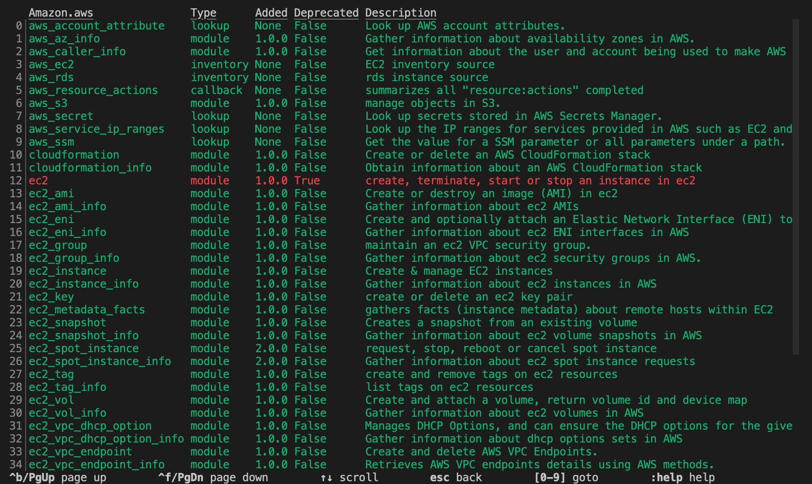
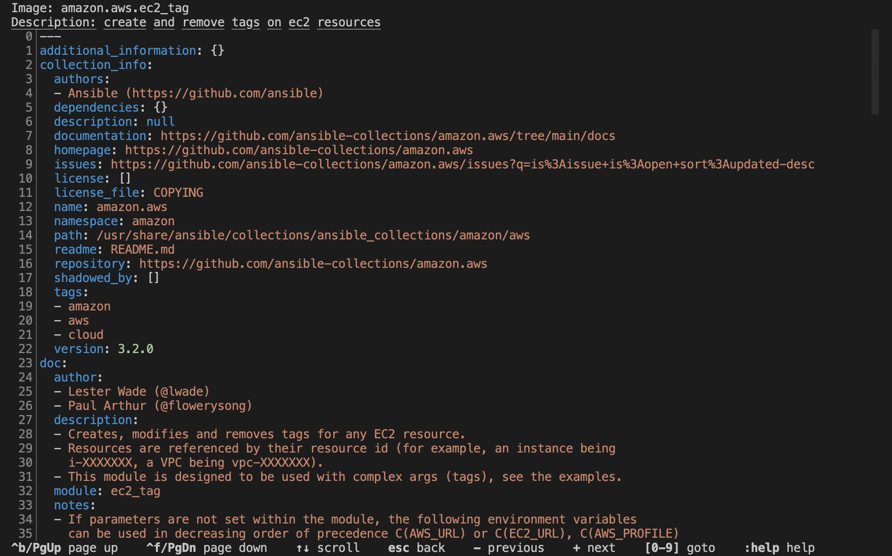
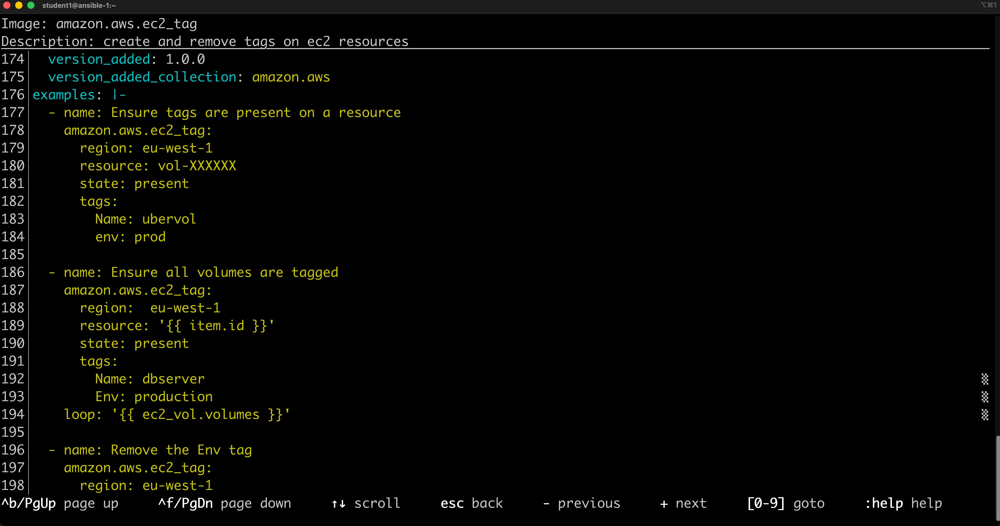

Workshop Exercise - The Ansible Basics
Tips for this Lab
- Use the VS Code terminal for all commands
- Copy and paste commands from the guide.
- Do not include the terminal prompt (e.g.,
[student@ansible-1 ~]$or$) - Run commands one at a time unless specified
- If multiple commands are provided, run each one individually by pressing Enter after each line.
Table of Contents
- Tips for this Lab
- Objective
- Guide
- Inventory File Basics
- Module Discovery
- Accessing Module Documentation
Objective
In this exercise, we are going to explore the latest Ansible command line
utility ansible-navigator to learn how to work with inventory files and the
listing of modules when needing assistance. The goal is to familarize yourself
with how ansible-navigator works and how it can be used to enrich your Ansible
experience.
Guide
Inventory File Basics
An inventory file is a text file that specifies the nodes that will be managed by the control machine. The nodes to be managed may include a list of hostnames or IP addresses of those nodes. The inventory file allows for nodes to be organized into groups by declaring a host group name within square brackets ([]).
Exploring the Inventory
To use the ansible-navigator command for host management, you need to provide
an inventory file which defines a list of hosts to be managed from the control
node. In this lab, the inventory is provided by your instructor. The inventory
file is an ini formatted file listing your hosts, sorted in groups,
additionally providing some variables. An example may look as follows:
1 2 3 4 5 6 7 | |
To view your inventory with ansible-navigator, use the command
ansible-navigator inventory --list -m stdout. This command displays all nodes
and their respective groups.
Run the following commands:
1 | |
Example Output:
1 2 3 4 5 6 7 8 9 10 11 12 13 14 15 16 17 18 19 20 21 22 23 24 25 26 27 28 29 30 31 32 33 34 35 36 37 38 39 40 41 42 43 44 45 46 47 48 49 50 51 52 53 54 55 56 57 58 | |
NOTE: -m is short for --mode which allows for the mode to be switched to standard output instead of using the text-based user interface (TUI).
For a less detailed view, ansible-navigator inventory --graph -m stdout offers
a visual representation of groupings.
Run the following commands:
1 | |
Example Output:
1 2 3 4 5 6 7 8 9 | |
We can clearly see that nodes: node1, node2, node3 are part of the web
group, while ansible-1 is part of the control group.
An inventory file can organize your hosts in groups or define variables. In our
example, the current inventory has the groups web and control. Run
ansible-navigator with these host patterns and observe the output:
Using the ansible-navigator inventory command, you can run commands that
provide information only for one host or group. For example, run the following
commands and observe their different outputs.
Run the following commands:
Each line is a separate command. Run each command one at a time (press Enter after each line)
ansible-navigator inventory --graph web -m stdout ansible-navigator inventory --graph control -m stdout ansible-navigator inventory --host node1 -m stdoutTip
The inventory can contain more data. e.g. if you have hosts that run on non-standard SSH ports you can put the port number after the hostname with a colon. One can also define names specific to Ansible and have them point to the IP or hostname.
Module Discovery
Ansible Automation Platform comes with multiple supported Execution Environments (EEs). These EEs come with bundled supported collections that contain supported content, including modules.
In simple terms, think of Ansible modules as individual LEGO blocks. Collections are groups of LEGO blocks organized by theme or purpose. Execution Environments are complete LEGO box sets that contain all the blocks, tools, and instructions you need to build something amazing.
When you use ansible-navigator, you're exploring what's inside your LEGO box set—discovering which blocks (modules) are available and how to use them. Different box sets (Execution Environments) may contain different collections and versions, so the documentation you see is always accurate for your specific setup.
Tip
In
ansible-navigatorexit by pressing the buttonESC.
To browse your available modules first enter interactive mode:
Run the following commands:
1 | |

Browse a collection by typing :collections
1 | |

Accessing Module Documentation
To explore a specific collection's modules, enter the number next to the collection name.
For example in the screenshot above, the number 0 corresponds to
amazon.aws collection. To zoom into the collection type the number 0.
1 | |

Directly access detailed documentation for any module by specifying its
corresponding number. For
example the module ec2_tag corresponds to 27.
1 | |
Scrolling down using the arrow keys or page-up and page-down can show us documentation and examples.


You can skip directly to a particular module by simply typing :doc
namespace.collection.module-name. For example typing :doc amazon.aws.ec2_tag
would skip directly to the final page shown above.
Tip
Different execution environments can have access to different collections, and different versions of those collections. By using the built-in documentation you know that it will be accurate for that particular version of the collection.